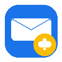

A Chrome extension that prompts you to set follow-up reminders before sending emails in Gmail — so you never forget to follow up on important conversations.
When you click "Send" on a Gmail email, FollowMail intercepts the action and shows a brief prompt asking whether you'd like a follow-up reminder. You can pick a preset (Tomorrow, In 3 days, End of week, In 1 week, In 2 weeks) or choose a custom date and time. All reminders default to 10:00 AM on the chosen day.
When the reminder is due, you'll receive a Chrome notification with the recipient and subject of the original email. Clicking the notification takes you straight to that thread in Gmail.
If you opt in by ticking "Also add to Google Calendar" in the reminder prompt, FollowMail uses the calendar.events scope to create a single event in your primary Google Calendar at the chosen reminder time. The event description includes a direct Gmail search link to the original email.
FollowMail only creates events you ask it to. It never reads, modifies, or deletes any other data in your calendar. Calendar communication happens directly between your browser and Google's API — none of your data passes through our servers.
FollowMail stores the recipient address, subject, and reminder timing of emails you choose to set reminders for. All this data is kept in Chrome's local storage on your own device. Nothing is transmitted to us or any third party.
Read the full Privacy Policy for details on what is collected, how it's used, and the permissions FollowMail requests.
FollowMail is available on the Chrome Web Store.
Add to Chrome